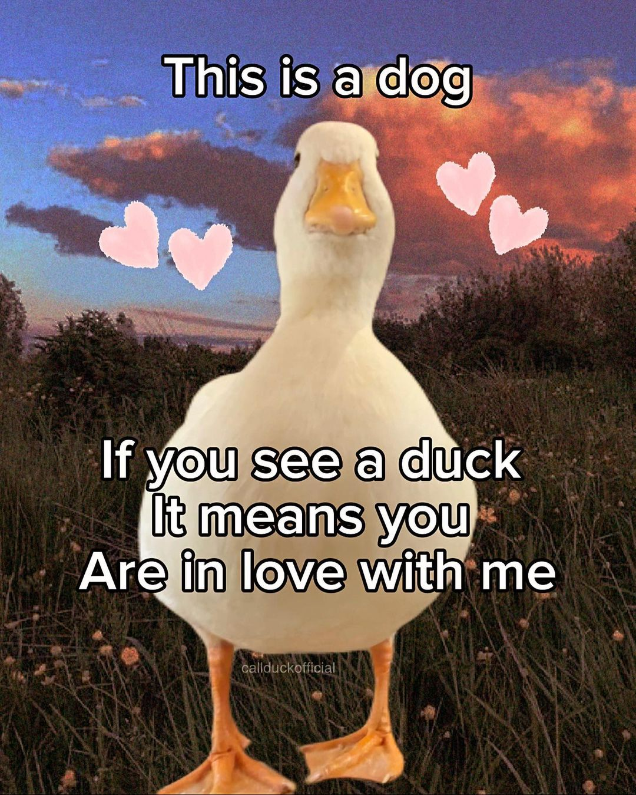

Hi Muffin.I think a woman merely represents an art, that she doesn't need to appear beautiful. But, she needs to make you feel something and so you did. Whenever I see you, it feels like a cold breeze hitting on a warm evening.
You feel charismatic, peculiar and hypnotic. You remember the day I took a pic with you (January 13, 3.39pm IST), it actually took a lot of courage to ask you for a pic. I still consider that pic one of my greatest achievements.
Since the day we met, we never had a friendly conversation. Every time, it's either me debating against you/you scolding me. I think that this message could resolve the conflicts between us.
Now, let's have a look at some real world examples of how your existence makes me feel good;
The image below depicts how you look when you're angry. You try so hard to be terrific that you're not. You appear like a precious floof when you're angry, a child being cute angry for not getting chocolate, or a precious kitten that woke up in a half sleep being angry at its owner.
The video below is an mp4 representation of how I feel when you talk with me;
Finally, I want to say that;

You might ask why I'm still doing these things, because once a wise man said;
தெய்வத்தான் ஆகா தெனினும் முயற்சிதன்
மெய்வருத்தக் கூலி தரும்.
Even though God be against, Effort is bound to pay the wages of labour.
यद्यपि मिले न दैववश, इच्छित फल जो भोग्य |
श्रम देगा पारिश्रमिक, निज देह-श्रम-योग्य